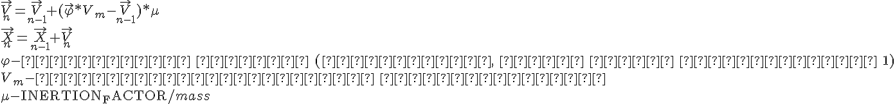
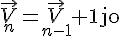

В соревновании MiniAICup#2 (Почти Agar IO) надо управлять амёбами, есть еду и других амёб. Для реализации алгоритма управления амёбой напрашиваются потенциальные поля, но есть одно большое НО.
Физика движения в игре задаются вот такими уравнениями:
speed_x += (nx * max_speed — speed_x) * INERTION_FACTOR / mass;
speed_y += (ny * max_speed — speed_y) * INERTION_FACTOR / mass;
Получается физика с трением и инерцией, которая все портит. Если физику не учитывать, и направлять вектор усилия (nx) прямо на ближайшую цель, то получается вот так:
См. Перемещение агента в игре.gif
Для оптимального поедания еды и противников нужно эти уравнения учитывать.
Для начала приведу их в удобный векторный вид:

